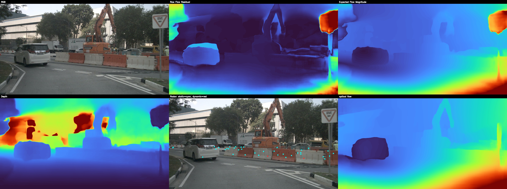
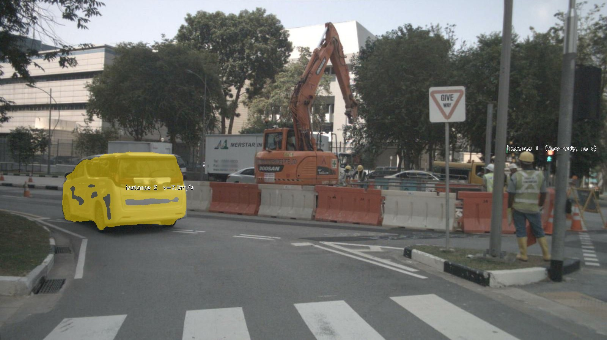
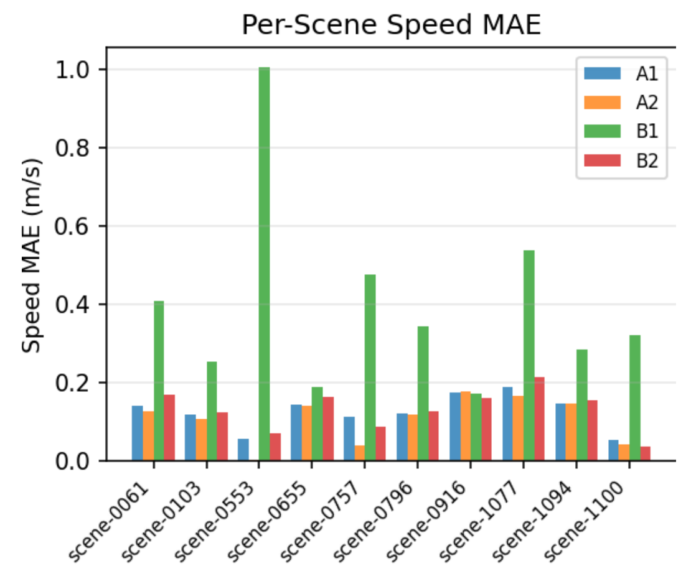

Abstract
Dynamic object segmentation and ego-motion estimation are closely coupled problems in autonomous driving, as accurate ego-motion estimation typically requires static scene observations, while identifying static observations requires knowledge of the ego motion. We present Radar-DOT, a radar–RGB framework that exploits radar Doppler measurements to address this coupling. Radar returns are first used to estimate ego velocity through a linear Doppler constraint, with residual-based static/dynamic segmentation and robust estimation used to reduce the influence of moving objects. The estimated motion is then combined with metric depth and dense optical flow to identify image regions whose observed motion is inconsistent with the rigid scene motion. Experiments on 10 nuScenes scenes (part of nuscenes-mini) demonstrate that the resulting geometric pipeline achieves 20.24% dynamic IoU and 33.67% F1-score over 394 frame pairs, while radar-based static-point filtering improves ego-velocity estimation compared with using all radar returns. These results demonstrate the potential of radar as a modality for jointly improving ego-motion estimation and dynamic object segmentation.
Contributions
- We estimate ego velocity from radar Doppler measurements while explicitly separating static and dynamic radar returns.
- We use the radar-derived ego velocity to predict rigid background flow and combine flow and depth consistency to identify independently moving image regions.
- We evaluate the complete closed-loop pipeline on ten nuScenes scenes using nuInsSeg-based dynamic-object masks, and analyze the contributions of radar ego-motion and the flow/depth consistency formulation.
Methodology
Radar Odometry from Doppler
Each radar return provides a range $r_i$, an azimuth $\theta_i$ and a line-of-sight Doppler velocity $d_i$. Under a static-world assumption, every return must satisfy a linear constraint on the ego velocity $\mathbf{v}_{ego} = [v_x \; v_y]^\top$ through its unit bearing $\mathbf{u}_i = [\cos\theta_i \; \sin\theta_i]$:
Stacking all returns gives an overdetermined system that is solved by least squares. The estimated velocity is rotated into the world frame and integrated over time to reconstruct the trajectory.
Static / Dynamic Radar Segmentation
Returns from moving objects violate the static-world constraint. Given an initial estimate $\hat{\mathbf{v}}_{ego}$, the Doppler residual of each return is
and returns with $e_i \geq \tau$ are marked dynamic. The ego velocity is then re-estimated using only the static set $\mathcal{S}$, optionally inside a RANSAC loop to make the initial estimate robust to moving objects and other outliers:
Rigid-Flow and Depth Consistency
For two consecutive frames, metric depth maps $D_{t-1}, D_t$ are estimated from RGB and radar with JustDepth. The radar ego velocity gives the camera translation $\mathbf{t}_{t-1\to t} = \mathbf{v}_{ego,t-1}\Delta t$ (rotation comes from ground-truth heading). Each pixel is back-projected with its depth, moved rigidly, and re-projected to obtain the expected flow $\mathbf{f}_{est}$ of a static scene. This is compared against the observed flow $\mathbf{f}_{obs}$ from a pretrained optical-flow network, and, since flow alone is ambiguous for objects moving along the viewing direction, against the depth observed at the projected location:
The residuals are combined into a normalized dynamic score whose tolerances grow with range and near the focus of expansion, where flow is least reliable:
A per-frame robust threshold $\tau = \mathrm{median}(S) + k\,\mathrm{MAD}(S)$ produces the dynamic mask. Occluded and out-of-bounds pixels are excluded, and morphological opening and closing clean up the result. No component of this pipeline is trained for segmentation.

Pipeline outputs. Top row: RGB image, flow residual $\mathbf{f}_{obs} - \mathbf{f}_{est}$, expected rigid flow $\mathbf{f}_{est}$. Bottom row: metric depth $D_{t-1}$, segmented radar point cloud (red = dynamic), observed optical flow $\mathbf{f}_{obs}$.

Final dynamic segmentation mask overlaid on the image.
Results
Dynamic Segmentation on nuScenes
We evaluate on 10 nuScenes scenes (394 consecutive frame pairs) against image-space dynamic masks built from nuInsSeg instances carrying the nuScenes moving attribute. Metrics are pixel-level and aggregated over all frames.
| Scene | Frames | IoU | Precision | Recall | F1 |
|---|---|---|---|---|---|
| scene-0061 | 38 | 0.3602 | 0.5177 | 0.5420 | 0.5296 |
| scene-0103 | 39 | 0.1859 | 0.2538 | 0.4097 | 0.3135 |
| scene-0553 | 40 | 0.2660 | 0.4355 | 0.4059 | 0.4202 |
| scene-0655 | 40 | 0.0201 | 0.0220 | 0.1872 | 0.0394 |
| scene-0757 | 40 | 0.3528 | 0.5243 | 0.5190 | 0.5216 |
| scene-0796 | 39 | 0.1299 | 0.1720 | 0.3464 | 0.2299 |
| scene-0916 | 40 | 0.0177 | 0.0186 | 0.2637 | 0.0348 |
| scene-1077 | 40 | 0.0165 | 0.1352 | 0.0184 | 0.0324 |
| scene-1094 | 39 | 0.2453 | 0.5561 | 0.3050 | 0.3939 |
| scene-1100 | 39 | 0.0829 | 0.2188 | 0.1177 | 0.1530 |
| Overall | 394 | 0.2024 | 0.3124 | 0.3651 | 0.3367 |
Per-scene performance of the radar-geometric dynamic segmentation baseline. Highlighted rows are shown in the qualitative videos below (green: good cases, red: failure cases).
Radar Ego-Velocity Estimation
Segmenting the radar point cloud into static and dynamic returns before solving for ego velocity lowers the ego-velocity estimation accuracy compared with using the entire point cloud.

Per-scene speed MAE. A1/B1: least squares on segmented static points / all points. A2/B2: least squares + RANSAC on segmented static points / all points.
Qualitative Results
Scenes where rigid-flow inconsistency cleanly isolates the moving vehicles and pedestrians.
scene-0061 · IoU 36.0% · F1 53.0%
scene-0757 · IoU 35.3% · F1 52.2%
scene-0553 · IoU 26.6% · F1 42.0%
Failure Cases
Performance varies with scene characteristics: the amount and distribution of dynamic content, radar coverage, depth quality, and the accuracy of the estimated ego motion. These scenes show where the purely geometric formulation struggles.
scene-1077 · IoU 1.7% · F1 3.2%
scene-1100 · IoU 8.3% · F1 15.3%
scene-1094 · IoU 24.5% · F1 39.4%